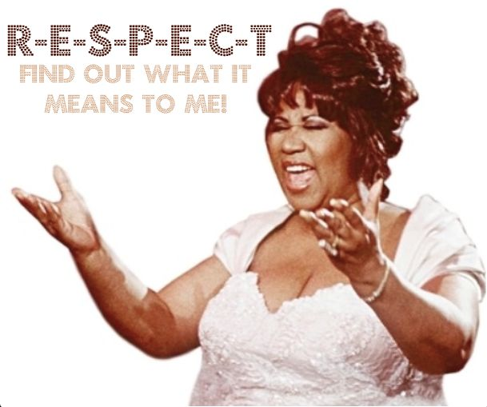

What to Look for
in a Partner
1 June 2016
Especially for dancers still in school, partnerships come and go in the blink of an eye. Maybe your partner graduates and moves away, or maybe it's just time for a change. Like finding a good mango at the grocery store, finding a new partner can be tough, but finding a good partner is even tougher. This article is aimed to help you choose the right partner for you.
When it Comes to Dancing
Skill
Certain things that people often look for in a partnership are really not that important. Being as swift as the coursing river, for example, is not that important, and neither is being exactly the same skill level as you.
Of course a partnership between a world champion and a beginner would not work, but the difference between a Bronze and Gold dancer is actually negligible in the big picture, and the lower level partner typically catches up within a few months, provided the couple practices regularly and takes lessons. If you can get a partner who is the same level as you, great, but in general, one partner is always going to be at least slightly better than the other. Skill is one of the absolute least important things in determining the course of a partnership, unless the difference is astronomical.
Goals
Now that we've covered the least important aspect of finding a partner, let's jump to the most important. You and your prospective partner need to have the same goals, or you'll be in a lot of trouble down the road. If you want to become a professional one day, but your prospective partner just does it for fun, you are not going to want to take the same number of lessons, you aren't going to want to practice the same amount or compete with the same fervour. Even if you both agree to approach dancing in the same manner, there is a fundamental disconnect in the driving forces behind your actions, and that will lead to tangible differences the longer you dance together.
The only time this isn't important is in temporary partnerships, where you know you are going to split up after a short amount of time. For all partnerships you want to last, make sure you discuss your goals. They don't have to be identical, but you need to both reach your goals by travelling down the same path together. Once your goals and your partner's goals lead you down different paths, the partnership will no longer survive.
Dedication
Dedication is extremely important in partnerships. You and your partner must want to put the same amount of yourselves into your dancing. Dedication is partly driven by your goals, but it is also affected by the sort of person you are. Some might have the goal of becoming an astronaut, while not being determined enough to sit through the math class required to get them there. Dedication is integral to your partnership. If you want to practice six days per week, but your partner only wants to practice two, one of three things is going to happen:
| 1) | You are going to practice the amount your partner wants to practice, and you will begin to feel dissatisfied that you can't practice more. You will eventually resent your partner. |
| 2) | You are going to practice the amount you want to practice, and your partner will begin to feel worn out and unhappy. Your partner will eventually resent you. |
| 3) | You are going to compromise, and neither of you will be happy. |
In any case, it ends badly. Again, your dedication doesn't need to be identical to your prospective partner's, but they need to fall in the same range, and there needs to be an actual point where both of you are comfortable.
Means
This is more important for serious dancers. To get better, you need to practice, you need to take lessons, and you need to compete. If your partner is an urgent care doctor and is too busy to practice, even though you both want to, you would be better off with somebody else. If you want to take two lessons per week, but your partner can't afford more than two lessons per month, you would be better off with somebody else. If you want to compete once per month, but your partner has a needy goldfish at home and is never able to leave for the weekend, you would be better off with somebody else. This is all to say that if you have the same goals and the same dedication, but worldly forces prevent you from doing what you want to do, it isn't going to work out.
When it comes to dancing, these are the three important things to look for: similar goals, similar dedication, and similar means. Without these three things, you two might enjoy a happy friendship together, but you will not enjoy a happy partnership. Skill, as discussed above, pales in comparison to these three things.
When it Comes to Interacting
Respect
You need to find a partner whose skills and opinions you respect, and who respects yours. Everyone has different skills, and everyone approaches dance slightly differently. You two can have a great partnership approaching dance from different angles, but you must both respect each other.
Without respect, one partner will assume the role of teacher, believing himself all knowing and always right. Without respect, arguments break out because neither person is willing to listen to what the other has to say. Respect is vital for partnerships, and even if your partner is less skilled than you in Ballroom, a lack of respect will end your partnership in dance just as easily as it ends partnerships in life.
Communication
We often hear the statistic that the majority of relationships end or the majority of workers are fired for want of good communication skills, and dance is no different. People can communicate in many different ways, but if you and your prospective partner don't speak 100% on the same wavelength, you have to be willing to listen and endure the pain of trying to figure out what this person is saying. Many successful partnerships include two partners with different styles of communication, but the secret is that they work on communicating. If you get the sense that your prospective partner doesn't speak on your wavelength and isn't willing to try, turn and run.
Trustworthiness
All good relationships are built upon trust. You need to find a partner you can trust to be at practice on time, a partner you can trust to have your back, a partner you can trust with your insecurities and faults.You and your prospective partner may soon be relying on each other, and it is unnerving for your well being to be hinged on the actions of somebody you do not fully trust. Of course as soon as you meet someone, you will not have yet built the trust a good partnership holds, but your prospective partner needs at least to be trustworthy.
When it comes to interacting, the two of you need to be compatible. You aren't just coworkers, you are partners. You will be spending hours per week solving problems about yourselves together, and each of you contributes to the success of the other. Perhaps the most important thing to heed is your intuition, or that sense you have of whether you are going to get along with someone or not. Don't ignore that sense, and even if you can't figure out exactly why your intuition is telling you what it is, trust it. The subconscious picks up on countless tiny cues the conscious mind misses, and by this point in your life it has developed the capacity to screen out the bad partners for you.
When it Comes to Locating a Partner
This one is difficult, but it is the first step. Many dancers would like to dance with a partner, but can't even find one. Partner search websites to not work - there are too many of them, and not enough people using any of them. If you are on a collegiate team, you have no excuse not to have a partner. New dancers come in every semester, and partnerships are always breaking up, providing ample new opportunities. If you are in a metropolitan area, search all the dance studios - chances are one studio or another will tell you it has a student looking for a partner, who might be a match for you. Also, use social media to connect with all the other dancers you can find, and let everyone know you're looking.
This is one place Ballroom Guide can't help you at the moment, but be patient - good things come to those who wait.